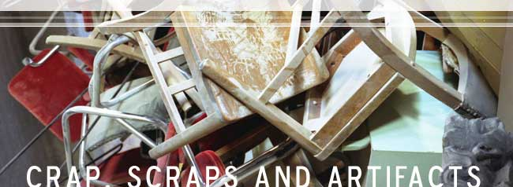

“Chicago is a city with an attitude problem,” he says. “It's the second city, and many people think along those lines: ‘Maybe if we build a shiny new building, then people will look at us.' You idiots, you had gorgeous buildings, now you have Niketown.” If you listen to Stuart Grannen, the future of commercial architecture in Chicago is grim. As the owner/operator of Architectural Artifacts, a high-end dealer of almost anything related to architecture – specifically that of the 19th and 20th centuries – Grannen is expected to be somewhat cynical of modern structural design. It's not the cynicism that makes this interesting, but its source. In speaking to him, you never get the sense that he is happy with his displeasure, as cynics so often are. It's readily apparent that he would like nothing more than to observe and enjoy as many beautiful buildings as possible, regardless of their date of construction.
“It's kind of like a beautiful woman,” he says, attempting to explain his fascination with architecture. “You see all kinds of beautiful women, but you also want something more, something classical and intelligent, something of quality. It's not just how ornate these buildings were, but the quality of the work.” From doors and mantelpieces to 20-foot concrete pillars and terra cotta gargoyles, Grannen saves anything he finds interesting from buildings that are to be demolished, even that which he knows he won't be able to sell for profit. Walking with him through his store, you can sense his passion for the architecture of the past, as well as his hope that he's contributing to its preservation.
It's not unfair to ask if what Grannen does is truly preserving art, or if he actually is cheapening its legacy by selling pieces of it to those who can afford such luxury. Initially, my thoughts followed a similar pattern. The idea of removing the choice pieces from a building seems antithetical to the ideas of preservation and restoration. Aren't the architectural wonders of the past best appreciated by allowing them to remain as they were at their inception, standing untouched, beautifully anachronistic? It very well may be that these days have passed. When constructing a new building, “there isn't the public appreciation or the tax breaks that there once were,” Grannen says. “I understand why someone wants to build an economically viable building. But, it's all about the almighty dollar now.” But the question remains: How can Grannen criticize the pursuit of the dollar when his business is so profitable? His business takes pieces of buildings and sells them, which makes his critique of those who build thinking only of the bottom line seem hypocritical. Surprisingly, he doesn't run from these questions, nor does he seem at all rankled by their undertones. “I acknowledge that there is a tenuous line between art and profit in what I do,” he says. “But I'm always willing to sacrifice profit for some piece that I just can't allow to be destroyed.” But it doesn't work both ways -“I won't sacrifice art for profit.” He notes that neither he nor his company has anything to do with the decision to destroy the buildings, bristling at the suggestion that he is destroying art. “Without me, it would all go in the dump,” he says, rightfully so. “If another person were to ask a wrecking company, they'd be refused. We're the ones who risk our lives and spend our time keeping these things out of the dump.”
| go to page 2 |